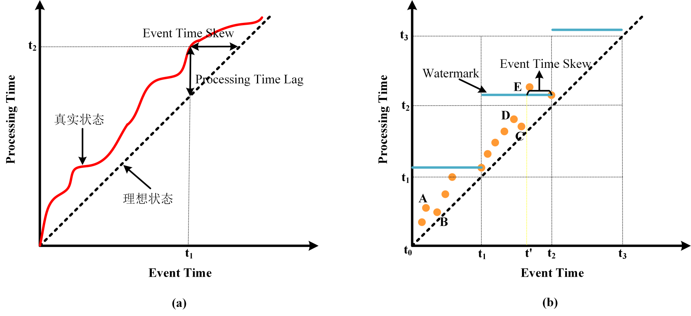
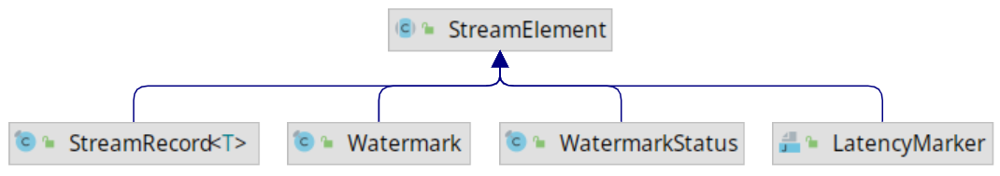
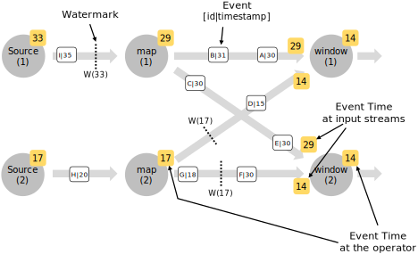
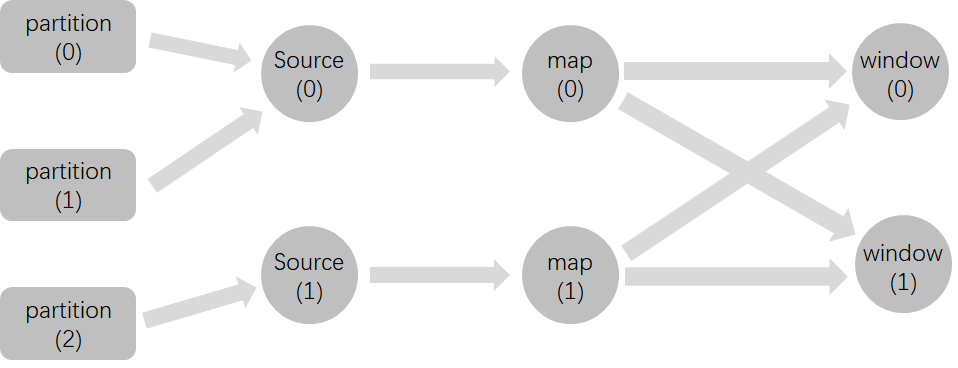
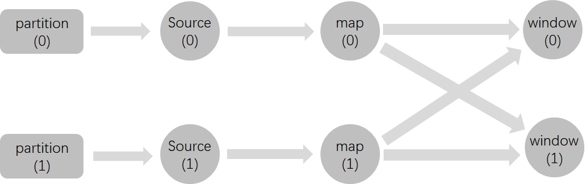
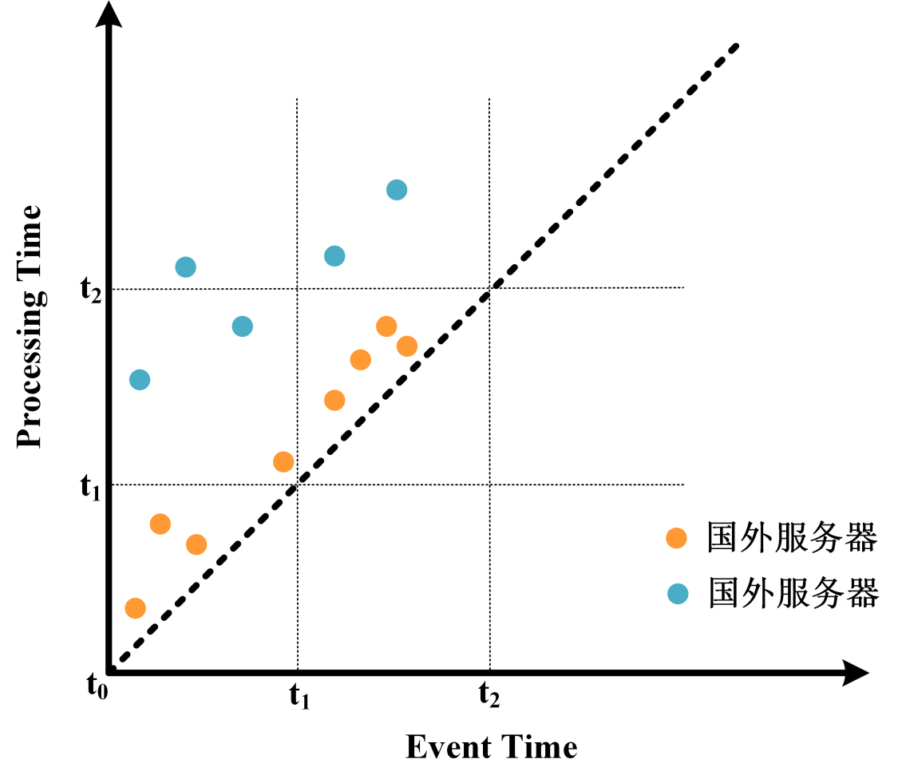

本文已收录在合集Apche Flink原理与实践中.
Watermark在Google的The Dataflow Model论文中被首次提出, 它在基于Event Time的流处理中具有重要作用, 是一种平衡计算结果准确性和延迟的机制. 虽然Watermark的概念不难理解, Flink中也有完善的Watermark策略, 但是在实际场景中生成合理的Watermark却并非那么简单, 在并行流下更是可能会出现多种问题.
本文在简单介绍Watermark的背景及概念之后, 详细介绍Flink在DataStream API和SQL API中对Watermark的支持, 接着解析在并行流下Watermark可能产生的一些问题, 最后通过一个具体案例介绍如何生成合理的Watermark.
Watermark背景
上文也说到了Watermark是在The Dataflow Model论文中提出的, 事实上The Dataflow Model对流处理来说是具有划时代意义的. 在Dataflow Model提出之前, 由于缺乏相关的理论指导, 开源的流处理引擎大多只能支持近似计算. 因此, 在当时Lambda架构是一种普遍的选择, 即采用两条数据处理链路, 使用批处理引擎产生准确但延迟高的结果, 使用流处理引擎产生低延迟但近似的结果. Dataflow Model通过引入Time Domain, Watermark, Window等一系列概念, 在理论上统一了流处理与批处理, 认为批处理是流处理的一种特例, 通过一些机制时可以实现准确且低延迟的流处理的. 在Streaming 101中作者也说到了设计良好的流系统实际上提供了严格的批处理功能超集.
关于Watermark与流处理更详细的背景可以阅读深入理解流计算中的 Watermark, 本文不再过多赘述.
Watermark概念
关于Watermark的概念, Flink文档中的描述比较容易理解, 以下是文档中的原话.
A Watermark(t) declares that event time has reached time t in that stream, meaning that there should be no more elements from the stream with a timestamp t’ <= t (i.e. events with timestamps older or equal to the watermark).
简单来说, 一个Watermark就是一个标识, 一个时间戳为$t$的Watermark表示Event Time小于或等于$t$的事件都已经到达. 有了这个前提, 基于Event Time的窗口计算才能产生准确的结果, 例如, 如果一个时间窗口的结束时间为$t_0$, 当前已经产生的最大Watermark为$t_1$, 并且$t_1 > t_0$, 那么现在触发该窗口的计算可以得到准确的结果, 因为属于该窗口的数据都已经到达. 为了更好地理解Watermark的含义, 这里举两个具体的例子.
下图(来自Flink文档)是带有时间戳的事件流, 由于事件是严格按顺序到达的, 因此Watermark的生成就非常容易, 只需要周期性地将当前某个事件携带的时间戳作为Watermark即可.

在严格按时间顺序到达的事件流中生成Watermark十分简单, 但是现实场景中的事件往往是乱序点的, 如下图所示. 对于这种情况, 如何生成Watermark就需要多方权衡了.

进一步思考其实可以发现, 之所以需要Watermark是因为在现实中Event Time总是滞后于Processing Time的, 这是由于现实中的数据源在地理上分散, 且其所处的硬件和网络环境各异, 将数据传输到处理中心存在延迟, 且可能各个数据源的延迟各不相同, 这就进一步导致了数据乱序. 如果Processing Time和Event Time总是同步, 那么处理时也就不会有乱序数据, 也就不需要Watermark.
通过下图我们可以进一步理解Event Time, Processing Time, Watermark与数据乱序之间的关系.
- 首先从图(a)中我们可以明确以下内容:
- 理想状态下数据一旦产生立即被处理, 即Event Time和Processing Time之间不存在偏差, 也就是图中斜率为1虚线展示的情况, 它表示Event Time总是等于Processing Time.
- 真实状态下由于处理管道引入的随机延时, Processing Time总是滞后于Event Time, 也就是图中红色曲线展示的情况, 它表示Processing Time总是大于Event Time.
- 曲线与虚线在纵轴方向的差值为Processing Time Lag, 也就是处理管道引入的时间误差, 以图中的状态为例, 发生在$t_1$时刻的事件由于管道误差, 直到$t_2(t_2>t_1)$时刻才被处理, 纵轴方向上$t_2-t_1$的值就称为Processing Time Lag.
- 曲线与虚线在横轴方向的差值为Event Time Skew, 可以理解为由于管道误差而使得计算引擎观察到的数据存在滞后性, 以图中的状态为例, 在$t_2$时刻只能观察到$t_2-t_1$时刻以前的数据, 横轴方向上$t_2-t_1$的值就称为Event Time Skew.
- 明确以上概念后我们再来看图(b):
- 图中有三个时间窗口$[t_0, t_1), [t_1, t_2), [t_2, t_3)$, 蓝色横线是Watermark, 这里取目前为止观察到的最大事件时间戳为Watermark.
- 图中圆点表示事件. A和B, C和D之间出现了数据乱序, 因为A的Event Time小于B, 但A的Processing Time大于B, 也就是说A比B先发生, 但是达到处理引擎的时间比B晚. C和D之间同理. 不过A和B, C和D之间的数据乱序并不影响窗口计算的准确性.
- 图中E也是一个乱序点, 它属于第二个窗口, 但是在大于$t_2$的Watermark生成之前E并未到达, 也就是说E是迟到数据, 在E到达之前窗口已经触发计算. 这里也可以看出在乱序情况下取当前最观察到的最大时间戳为Watermark并不是完美的方案. 最简单的解决方案是增大Event Time Skew, 我们可以将当前观察到的最大事件时间戳减去一个固定值作为Watermark, 如图中黄色虚线所示, 若当前观察到的最大时间戳为$t_2$, 那么我们将$t’$作为Watermark, 由于$t’$小于E的事件时间, 因此在E到达时窗口还未触发计算, 就能更大程度地容忍乱序.

从以上案例也可以发现, 为实现中的数据流生成Watermark并不简单. 最简单的方法是以当前观察到的最大时间戳减去一个固定值为Watermark, 这也是Flink内置的BoundedOutOfOrdernessWatermarks策略的实现原理. 至于这个固定值是多少, 只能通过观察具体应用的数据延迟状况来设定了. 如果这个值设置的太大, 那么虽然避免了数据迟到, 但是却增加了窗口触发计算的延迟, 如果设置得太小又会导致窗口过早触发计算, 从而使得结果不准确. 这也可以看出Watermark可以用来平衡计算结果的准确性和延迟.
如果从Watermark的角度来审视一下批处理和流处理的关系我们可以发现: 在批处理中我们实际上是使用了非常宽松的Watermark策略, 比如我们通常会在当天处理前一天的数据, 这样的Watermark策略可以理解为将当前观察到的数据的最大时间戳减去数个小时作为Watermark. 在这样宽松的Watermark策略下, 总能保证在批处理程序启动时所有数据已经全部到达, 因此产生准确的结果. 而在流处理中我们通常会使用紧迫的Watermark策略, 以更快得到处理结果, 这在降低延迟的情况下可能牺牲一定的准确性. 从中也可以看出, Watermark是统一流处理与批处理的重要理论依据.
实际上, 如果把Watermark生成抽象为一个算法, 那么其输入就是当前已经观察到的数据, 输出就是Watermark. 关键在于如何根据观察到的数据生成更好的Watermark, 尽可能使得计算结果准确并降低延迟. 本文后面会根据一个具体的案例, 来分析如何根据现实的数据情况生成相对合理的Watermark.
Flink中的Watermark
Flink DataStream中的Watermark
Flink的DataStream API提供了对Watermark的完善支持, 不仅内置了一些常用的Watermark生成器, 也提供了扩展接口, 用户可实现自己的Watermark生成算法.
Watermark的生成
Flink 1.11中对Watermark相关的API进行了重构, 具体可见FLIP-126. 由于旧API已经废弃, 且新API提供了更好的抽象, 本文只讲述新API的使用方法.
新API提供了WatermarkStrategy接口, 用于组装WaterMarkGenerator(用于实现Watermark生成算法)和TimestampAssigner(用于指示如何从事件中提取事件时间). 在DataStream API中有两种使用WatermarkStrategy的方法: 1) 直接在Source中给出; 2) 调用DataStream的assignTimestampsAndWatermarks方法. 具体使用方式如下.
1 | final StreamExecutionEnvironment env = StreamExecutionEnvironment.getExecutionEnvironment(); |
尽管上述两种方法都可实现Watermark生成, 但应当尽可能使用第一种方法, 第二种方法在并行流下可能出现难以预料的问题, 后文会进一步分析这种问题.
WatermarkStrategy中的TimestampAssigner一般根据数据格式传入相应的Lambda函数提取时间戳即可, 因此这里不再赘述. 重点是WaterMarkGenerator, 它是Watermark生成算法的实现, Flink内置了两种实现:
WatermarkStrategy.forMonotonousTimestamps是以当前最大时间戳为Watermark的实现;WatermarkStrategy.forBoundedOutOfOrderness是以当前最大时间戳减去固定值为Watermark的实现.
以上两种算法的实现类都是BoundedOutOfOrdernessWatermarks, 我们可以看下它的源代码.
1 | public class BoundedOutOfOrdernessWatermarks<T> implements WatermarkGenerator<T> { |
上述WatermarkGenerator中的onPeriodicEmit方法是周期性触发的, 它的触发间隔可由ExecutionConfig.setAutoWatermarkInterval()设置, 默认状况下为200毫秒. 如果要改变生成周期, 可通过如下方法更改.
1 | StreamExecutionEnvironment env = StreamExecutionEnvironment.getExecutionEnvironment(); |
在旧的API中有两种生成Watermark的方式:
- Periodic模式: 对应原API中的
AssignerWithPeriodicWatermarks, 即周期性地生成Watermark, 在新API中只要在WatermarkGenerator.onPeriodicEmit()中实现Watermark的生成逻辑, 系统便会根据ExecutionConfig.getAutoWatermarkInterval()的值周期性地调用上述方法. - Punctuated模式: 对应原API中的
AssignerWithPunctuatedWatermarks, 即根据每个事件绝对是否生成Watermark, 在新API中只要在WatermarkGenerator.onEvent()中实现Watermark的生成逻辑, 系统便会为每个事件调用该方法, 同时需要调用ExecutionConfig.setAutoWatermarkInterval(0)关闭周期性Watermark生成.
Watermark的传播
Watermark可在Source或之后的操作中生成, 一旦生成必须不断往下游传播. 要理解Watermark在Flink中的传播流程, 我们先来看下Flink中Watermark的实体是什么. 如下图所示, Flink中有一个Watermark类, 它和StreamRecord(DataStream中的每条数据在运行时都作为StreamRecord的实例在算子间流转)一样都继承自StreamElement. 也就是说在Flink中, Watermark同数据流中的数据一样是以StreamElement实例在算子间流转的.

对于无需缓存数据的算子(如map算子), 在接收到Watermark之后可直接发送到下游. 而对于需要缓存数据的算子, 如窗口算子, 则需要分两种情况: 若是当前Watermark没有触发计算, 那么直接将其往下游发送即可; 若是当前Watermark触发了计算, 那么需要等计算结果发送之后, 再发送Watermark.
另外需要注意的是在并行流中, 算子会向下游的所有算子广播Watermark. 如下图所示(来自Flink文档), map算子会向window算子广播Watermark, 而window算子会将来自上游各个算子的Watermark的最小值作为当前Watermark. 这一机制产生的现象就是所有window算子的Watermark都是一致的.

Flink SQL中的Watermark
从Flink 1.10开始(见FLIP-66), Flink利用SQL方言在SQL DDL中增加了对时间属性定义的支持, 包括Processing Time和Event Time. 其中, Processing Time的定义比较简单, 这里不再赘述. 对于Event Time的定义, Flink SQL引入了一个新名词Rowtime属性. Rowtime属性必须是表Schema中具有TIMESTAMP类型的现有列, 一旦在其上定义水印, 它将被标记为Rowtime属性. 在DDL中定义Watermark的语法如下.
1 | CREATE TABLE table_name ( |
从中可以看出, Watermark的定义包含两部分: (1) Rowtime列, FOR之后的单词指定; (2) Watermark生成策略, AS之后的表达式指定. 另外值的说明的是:
- Watermark策略的返回值是可为
null的BIGINT或TIMESTAMP(3)类型; - 每个记录都会生成Watermark, 但只有当生成的Watermark不为null, 且大于之前已经发出的最大Watermark时, 当前Watermark才会下发;
- Watermark发出的时间间隔由
ExecutionConfig.getAutoWatermarkInterval()决定, 这其实是一种Periodic模式, 如果要实现Punctuated模式, 需要调用ExecutionConfig.setAutoWatermarkInterval(0). - Rowtime属性列也可以是一个计算字段, 下文将详细说明.
- 在DDL中定义的Watermark策略会尽可能下推到Source算子, 比如目前Kafka的SQL Connector就实现了这一功能.
在Periodic模式中, DataStream API内置了两种Watermark生成策略, 也同样可在SQL DDL中定义. 其中, 单调递增的时间戳分配器, 对应WatermarkStrategy.forMonotonousTimestamps()可使用如下语句实现.
1 | CREATE TABLE kafka_source ( |
最大固定延迟的时间戳分配器, 对应WatermarkStrategy.forBoundedOutOfOrderness()可使用如下语句实现.
1 | CREATE TABLE kafka_source ( |
在Punctuated模式中, 常需要根据记录的具体特征决定是否发送Watermark, 此时我们也可以使用自定义的ScalarFunction作为Watermark策略. 例如, 假设log_ts字段描述了记录的创建时间, 并且一些记录带有一个flag, 将它们标记为序列的结尾, 这样时间戳较小的元素就不能再出现了. 然后我们可以实现一个简单的UDF来根据log_ts和flag字段发出水印.
1 | CREATE TABLE myTable ( |
1 | public class WatermarkOnFlag extends ScalarFunction { |
需要注意的是:
- 在Flink SQL中使用Punctuated模式需要设置
ExecutionConfig.setAutoWatermarkInterval(0); - 受限于Flink对有状态
ScalarFunction的支持, 目前无法实现一些高级的Watermark生成策略, 例如基于过去一部分数据计算得到Watermark. 这也是当前SQL相对于DataStream在Watermark上支持的不足, 如果有复杂的Watermark生成需求, 目前只能使用DataStream API.
并行流下的Watermark
非Source算子生成Watermark的问题
Flink DataStream API支持在非Source算子中生成Watermark, 然而在并行流下这种生成方式很可能出现问题. 我们用下面的例子详细说明.
假设有如下Flink作业图, 数据源有三个Paritition, Flink作业的并行度为2, 在map算子之后调用了assignTimestampsAndWatermarks生成Watermark, 策略是当前最大时间戳减5秒. keyby之后是两个Tumbling window算子, 窗口大小为10秒.

输入数据的格式为(id, value, time). 并且id为0的数据会进入partition(0), 依次类推. 由于Flink作业的并行度为2, 因此其中一个Source算子必然会对应两个Partition. 现在如果有如下数据按顺序达到, 那么由于在第5条数据达到的时候, 窗口[2022-04-25 10:00:00, 2022-04-25 10:00:10]被触发, 之后达到的第6条数据就会变为迟到数据.
1 | 0,A,2022-04-25 10:00:00 |
上述案例中, 其中一个Source算子读取了两个Partition的数据, 且并没有将各个Partition的Watermark进行对齐, 在之后的map算子中, 来自多个Partition的数据进行混合, 因此生成的Watermark将无法表达各个Partition内数据的情况. 而如果将Watermark的生成放到Source算子中, 那么即使Source算子的并行度与Partition数量不同, Source算子也会为每个Partition生成单独的Watermark并进行对齐, 这样就不会出现上述问题了.
因此, 在并行流下对于像Kafka这样的多Partition数据源, 应该把Watermark的生成放在Source算子中. 在原来的SourceFunction API和最新的Source API中都提供了对应的方法.
1 | // 在新的Source API中给定Watermark策略 |
空闲Source的问题
上文也说到了, 在并行流下Flink会实行Watermark对齐, 即上游算子向下游广播Watermark, 下游算子将来自上游各个算子的Watermark的最小值作为当前的Watermark. 在多Partition情况下, 如果存在长时间不更新数据的空闲Partition, 那么由于Watermark对齐, 会使其他window算子长时间得不到触发.
这里还是以一个详细的案例说明上述情况. 假设有如下Flink作业图, Watermark在Source算子中生成, 生成策略, window类型及大小, 输入数据的格式和对应Partition同上一小节.

现在我们有如下数据按顺序到达, 可以看到, 在2022-04-25 10:00:00之后的半个小时内都没有id为0数据, 也就是说partition(0)中有很长一段时间没有数据写入, 而partition(1)中不断有数据写入. 但是由于Watermark对齐机制, window算子的Low Watermark一直无法推进, 需要一直等到直到partition(0)重新有数据写入.
1 | 0,A,2022-04-25 10:00:00 |
上述这种情况会导致两个问题:
- 其一是window算子中需要缓存大量id为1的数据, 使得作业的State不断增大, 给Checkpoint带来压力, 失败后的重启时间也变大.
- 其二是计算结果的延迟变大, 可以看到id为1在2022-04-25 10:00:00后的数据最大需要延迟30分钟后才能输出计算结果.
对于空闲Source的问题, Flink中已经提供了解决方案. 可以在WatermarkStrategy中通过withIdleness指定判断Source为空闲的最大时间间隔. 比如以下代码表示, 如果一个Source超过1分钟没有数据更新, 那么将该Source标识为空闲Source, 其他Source的Watermark不需要再与该Source对齐.
1 | WatermarkStrategy |
Event Time倾斜的问题
在并行流下多Partition数据源中可能产生的另一个问题是Event Time倾斜. Event Time倾斜即各个Partition中数据的Event Time推进不一致, 部分Partition中的Event Time与其他Partition中的Event Time存在较大差距. 在这种情况下, 由于Watermark对齐机制, 就导致了下游Low Watermark不能推进, 而Event Time推进较快的Partition的数据又被不断读入, 对于需要Watermark触发的window算子就会缓存大量数据.
举例来说, 如果我们从某个Kafka Topic的开头读取历史数据, 各个分区的Event Time很可能并不同步, 如果一个Partition的Event Time明显比其他Partition慢, 那么由于Watermark对齐, window算子的Low Watermark会被拖慢, 而其他分区的数据又在不断读入, 这就造成了大量的数据缓存.
从表象上来看, 空闲Source和Event Time倾斜都会造成大量的数据缓存, 不过这两个问题是存在本质区别的:
- 空闲Source是某一Partition在一段时间内没有数据写入, 经过一段时间后又有数据写入, 在这个过程中数据的Event Time存在跳跃式推进, 也就是说这段时间内确实没有数据, 而不是数据迟到. 在这种情况下我们可以将这个Partition标识为空闲从而直接忽略.
- 然而在Event Time倾斜问题中, 各个Partition中并不存在Event Time的跳跃式推进, 也就是说并不存在某个Partition在某段时间内没有数据, 而是各个Partition的Event Time推进不一致. 这也就无法通过将某个Partition标识为空闲解决.
对于Event Time倾斜问题, 在Flink 1.15中提供了解决方案. 可通过如下方式使用, 即通过在WatermarkStrategy中添加withWatermarkAlignment来实现各个Source的Watermark同步推进. 它实现了这样的语义, 如果两个Source间Watermark的差值超过了一个给定值maxAllowedWatermarkDrift, 那么停止读取Watermark推进较快的Source, 等到两个Source间的Watermark小于maxAllowedWatermarkDrift时再重新开始读取该Source. 需要注意的是Source间的Watermark同步只支持新的Source API, 且只能通过以下方式使用, 在DataStream.assignTimestampsAndWatermarks中使用是无效的.
1 | DataStream<Tuple2<Long, String>> streamSource = env.fromSource( |
withWatermarkAlignment有三个参数:
- 第一个参数是
String类型, 用于对Source进行分组, 只有在同一个分组中的Source才会实行Watermark同步; - 第二个参数是
Duration类型, 表示maxAllowedWatermarkDrift; - 第三个参数也是
Duration, 表示间隔多久进行一次同步.
在实现上Flink增加了一个协调者为各个Source的Watermark进行校准, 每个Source实例需要定期向协调者报告目前的Watermark, 并接受协调者的返回决定是否需要继续拉取数据.
Watermark生成实践
在Watermark概念这一节中我们已经说到, Watermark是需要根据数据本身的特征以及已经观察到的数据来生成的. 这里我们通过一个具体的可能在真实场景中遇到的案例来进一步说明这一点. 这一案例参考了深入理解流计算中的 Watermark.
假设我们有一个网站, 为了同时服务中国和美国的用户, 在中国杭州和美国旧金山各购置了一台云服务器. 服务器会实时将登录用户的数据发送到位于中国上海的Kafka集群中. 现在需要每隔10分钟统计一次网站的总访问量.
在这种场景下, 由于国内服务器与国外服务器和Kafka集群的网络延迟不同, 到达的数据可能存在乱序. 这里的乱序体现在两个方面:
- 其一是相同服务器上的数据乱序, 比如国内服务器上的数据由于网络抖动先产生的数据反而比后产生的数据迟到, 这种情况具有很大的随机性.
- 其二是国内服务器和国外服务器之间的数据乱序, 由于国外服务器的网络延迟大, 所以其上的数据整体上比国内服务器上的数据慢到一段时间. 比如国内服务器在$t_2$时刻的数据已经到达, 而国外服务器$t_1$时刻的数据反而在之后到达. 两个服务器之间的乱序通常有一定的系统性.

为了解决第一个乱序问题, 我们可以简单采用固定延迟的Watermark生成策略, 即使用WatermarkStrategy.forBoundedOutOfOrderness. 对于第二个乱序问题, 我们可以将两个服务器的Watermark进行对齐, 即对不同服务器的数据分别计算Watermark, 再取其中的最小值作为最终的Watermark.
在只有两个服务器的情况下, 我们可以将不同服务器的数据写入不同的Kafka Partition. 这样只要保证在Source中生成Watermark, 依据Watermark的对齐机制, Flink会自动为我们选择最小的Watermark, 我们就只需直接使用WatermarkStrategy.forBoundedOutOfOrderness策略即可.
但是在更多的服务器场景下, 我们可能很难控制服务器与Kafka Partition之间的对应关系, 这时我们只能编写自定义的Watermark生成算法. 具体实现如下.
1 | public class VisitWatermarkGenerator implements WatermarkGenerator<Visit> { |
总结
Watermark是流处理中的重要抽象, 它是平衡流处理准确性和延迟的机制. Watermark需要根据数据的具体情况和已经观察到的数据来生成. Flink在DataStream API和SQL API中都已经增加了对Watermark的支持, 不过对于复杂的Watermark策略, 目前只能用DataStream API实现. 在并行流下使用Watermark可能会出现两类问题: 一类是由于在非Source中生成Watermark导致数据乱序, 这一问题是可以避免的; 另一类问题是由于数据特征而导致的空闲Source和Event Time倾斜, Flink现在也引入了对这两种问题的解决方案.
参考
[1] Flink Documentation - Timely Stream Processing
[2] Flink Documentation - Generating Watermarks
[3] Flink Documentation - Builtin Watermark Generators
[4] The Dataflow Model
[5] Streaming 101: The world beyond batch
[6] Streaming 102: The world beyond batch
[7] FLIP-66: Support Time Attribute in SQL DDL
[8] Flink 小贴士 (3): 轻松理解 Watermark
[9] 深入理解流计算中的 Watermark
[10] Flink Event Time 倾斜
本博客所有文章除特别声明外, 均采用CC BY-NC-SA 3.0 CN许可协议. 转载请注明出处!
关注笔者微信公众号获得最新文章推送